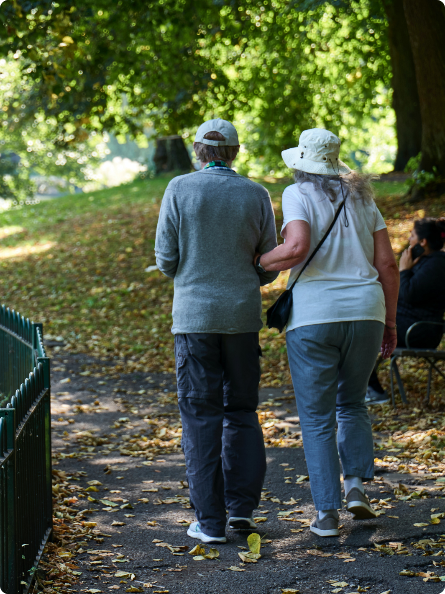
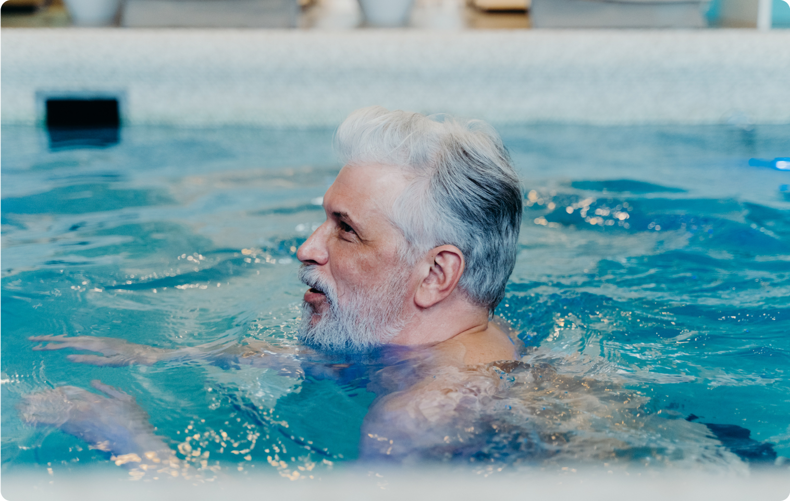

Página Inicial
Sobre Nós
A caminhada é um forma simples e acessível de exercício físico que traz uma série de benefícios para a saúde. Além de ser uma atividade de baixo impacto, ela pode ser praticada por pessoas de todas as idades e níveis de condicionamento físico. A caminhada também é uma ótima maneira de aliviar o estresse e melhorar o humor, uma vez que libera endorfinas, os hormônios responsáveis pela sensação de bem-estar. Portanto, não há desculpas para não praticar esse esporte tão benéfico para o corpo e a mente.
Se você ainda não está convencido(a) de praticar a caminhada, considere também que ela pode ser uma atividade social. Convidar um amigo ou familiar para caminhar junto com você pode tornar o exercício mais divertido e motivador. Vocês podem explorar diferentes locais, como parques ou praias, e aproveitar o tempo juntos enquanto cuidam da saúde. Além disso, a caminhada pode ser adaptada de acordo com suas preferências e necessidades. Você pode escolher o ritmo, a duração e o terreno que mais lhe agradam. Você só precisa de um tênis confortável! 
A natação é uma atividade de baixo impacto, o que a torna ideal para pessoas de todas as idades e condições físicas, inclusive para aqueles que buscam reabilitação de lesões. A água proporciona uma sensação de leveza e suporte, reduzindo a tensão nas articulações. Além dos benefícios físicos, a natação também é uma ótima maneira de relaxar e aliviar o estresse. A imersão na água cria um ambiente tranquilo, onde você pode se desconectar do mundo exterior e focar na sua técnica e respiração. 